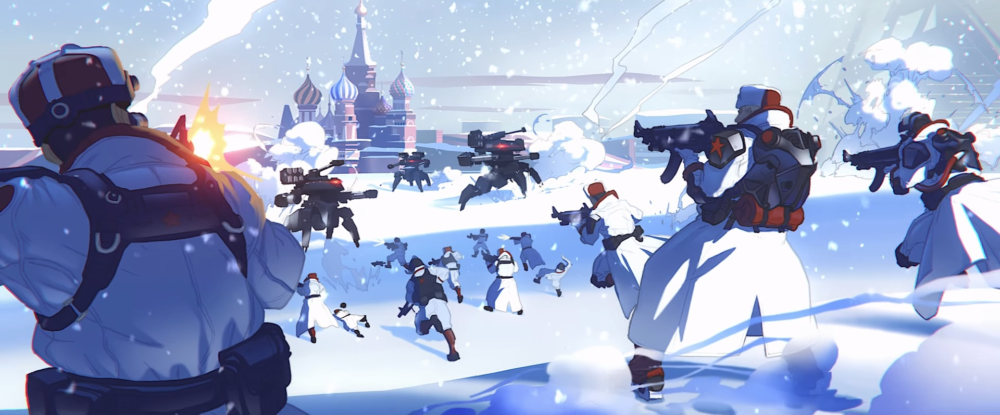
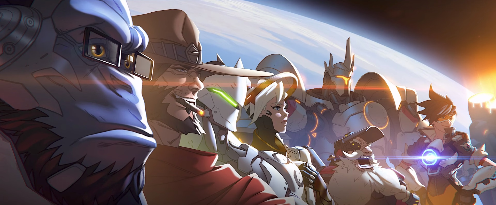
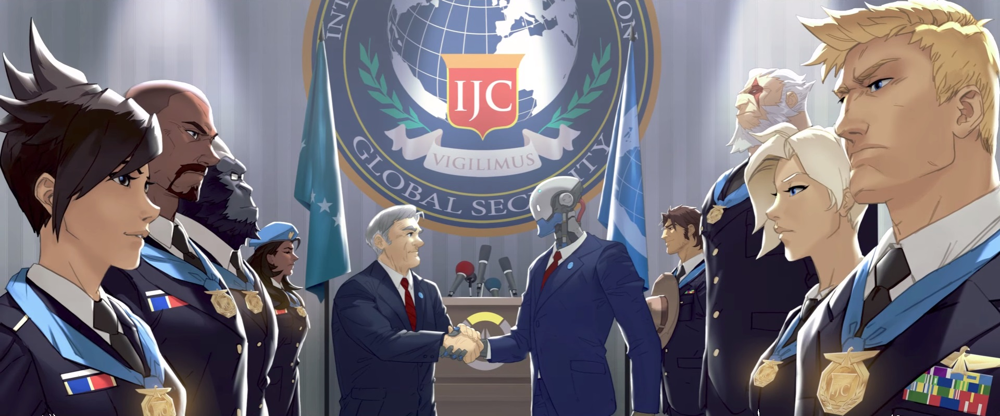
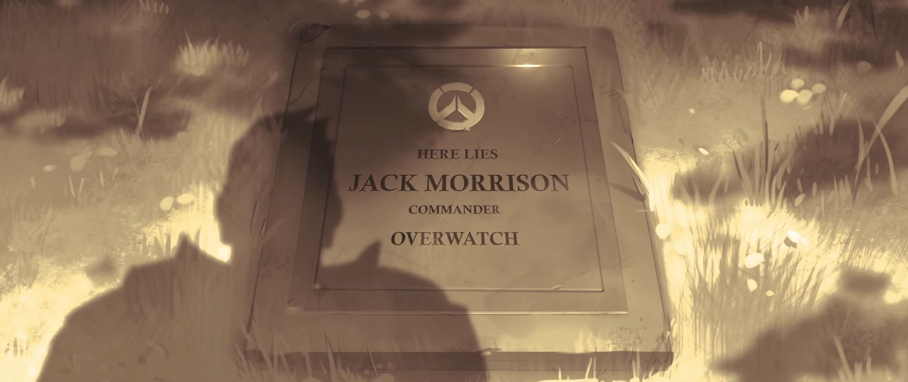
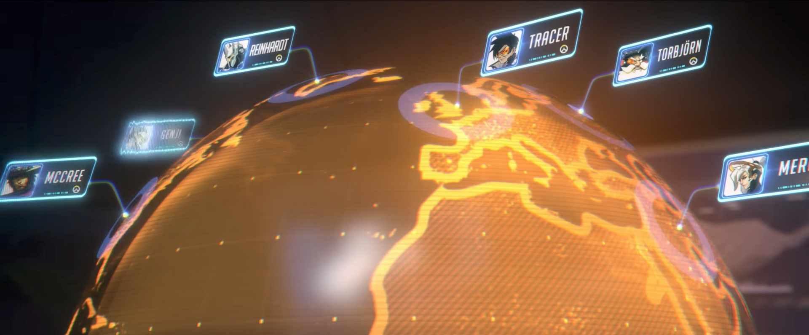

Story
The Omnic Crisis and the founding of Overwatch
Over thirty years ago, a battle between mankind and robots began, known as the Omnic Crisis. Omnics were originally built by the Omnica Corporation; dubbed "omniums", they were a type of self-improving robot. The company was eventually dismantled due to fraud. Soon after, omnics turned against humans when God Program-infected omniums started building the omnics' rebel army.
The world fought back. Russia, the first country to be affected, produced giant, human-piloted mechs called Svyatogors to combat the Omnics. As the crisis spread to the rest of the world, other nations were forced to develop their own solutions. The United States created the Soldier Enhancement Program, and J08 produced Crusader armor for the Crusaders in Germany. However, no country could effectively fight back against the omnics.
As the last response to the worldwide threat, the United Nations formed an elite strike team named Overwatch. The team included Jack Morrison and Gabriel Reyes, "enhanced soldiers" from the United States; Torbjörn Lindholm, engineer and weapon designer from Sweden; Reinhardt Wilhelm, a Crusader from Germany; Ana Amari, an expert sniper from Egypt; and Liao (currently unknown affiliation and information).
The leadership of Overwatch at that time fell to the responsibility of Strike Commander Gabriel Reyes, senior officer and closest friend of Jack Morrison. But for Overwatch, Morrison had a greater impact on the group in the long term. He brought out the best in team members and helped mold Overwatch's diverse (and sometimes conflicting) agents into a cohesive fighting force. Under that strong cohesion, Overwatch won the war, repelled the omnic threat and restored peace to the world.
Two decades of peacekeeping and scientific development
After the Omnic Crisis, Overwatch experienced a tremendous rise in prominence. New funding and resources gave the now-public organization far-reaching global influence. They had gathered many skilled, renowned, and amazingly talented fighters, scientists, and doctors from all over the world to form the ultimate organization of peacekeepers. The leadership of Overwatch later turned to Jack Morrison, who was promoted to Strike Commander. Ana Amari was promoted to Captain, and second-in-command after Morrison. For Gabriel Reyes, he took over the role of the leader of Blackwatch, the covert team of Overwatch. This was the start of the conflict between Morrison and Reyes.
One of the most prominent figures of Overwatch was Dr. Angela Ziegler, a renowned medic from Switzerland. She joined after the Crisis, known by her call sign, Mercy. A peerless healer who lost her parents in the war, she became Overwatch's head of medical research, seeking to leverage her work for healing on the front lines. She was one of the people who saved the life of Genji Shimada, the youngest son of the Shimada Empire, a criminal organization. After his fight to the death with his brother, he was brought back to life in a cyborg body by Overwatch. Genji was tasked by the organization to bring down his former clan. It's unknown after or before the downfall of Shimada family, Genji left Overwatch.
Overwatch also welcomed Winston, a super-intelligent, genetically engineered gorilla from the overthrown Horizon Lunar Colony, as a scientist and soldier. One of his greatest achievements in Overwatch was saving the life of pilot Lena Oxton. Suffering from chronal disassociation due to an accident involving the experimental Slipstream craft, Winston anchored Lena in time by inventing the chronal accelerator. Winston also apprehended Doomfist, one of the villains who sought to bring down Numbani, a city where humans and omnics have been living together in peace since after the Crisis.
One of the high-ranking agents of Overwatch, Gérard Lacroix was assigned to the operation against Talon, a terrorist organization. Talon had kidnapped Gérard's wife, Amélie Lacroix after unsuccessful attempts to eliminate him. Eventually, Overwatch was able to retrieve her safely from Talon. Unexpectedly, two weeks later, she killed Gérard in his sleep and disappeared. For it was revealed that Talon had subjected her to an intense program of neural reconditioning and made her a sleeper agent. Amélie returned to Talon, and became one of the best assassins for the organization, now going by the name Widowmaker.
No one in Overwatch knew the story behind this except for Captain Ana Amari when she faced off with Widowmaker in a hostage rescue mission from Talon. Two snipers fought against each other, with Captain Amari managing to shoot the enemy's visor off, revealing the face of Amélie Lacroix. The sight made Ana Amari hesitant, and Widowmaker had enough time to take a fatal shot. Captain Ana Amari was believed to be killed at that time.
Beside Reyes, Blackwatch's only other known agent is Jesse McCree, a former member of the Deadlock Gang. McCree was captured after Overwatch raided the gang's base of operations, and he was given the option to join Overwatch. He then was brought under the wings of Reyes and became a member of Blackwatch
.Over time, Reyes began to resent Morrison more and more for receiving the public's attention while he received none. The tension became more pronounced as time went on. Other people, including Dr. Ziegler, tried to mend the relationship between the two leaders. Reyes in the mean time secretly started to organize a rebellion within Overwatch, separating the organization into two sides. Some people chose to not take sides, and others left Overwatch, as McCree did.
The downfall of Overwatch
In the eyes of the public, Overwatch slowly suffered from accusations of criminal activities, and the issue grew bigger day by day. Controversial missions stoked public outrage, forcing some of the organization’s most celebrated agents to retire in disgrace. As time passed, it became harder to ignore, until one day, everything came to light when the existence of Blackwatch was revealed to public along with a series of revelations: negligence resulting in high-profile mission failures, corruption and mismanagement, weapons proliferation, and human rights abuses.
A special United Nations committee launched a lengthy and highly secretive investigation into the claims. Before the event could happen, Gabriel Reyes launched an attack on Morrison at Overwatch's Swiss Headquarters. The result of their clash caused an explosion large enough to destroy the headquarters. The United Nations claimed it was an accident and announced the death of Jack Morrison and Gabriel Reyes afterward. They also decided to shut down all of Overwatch's operations and put forward the Petras Act, which deemed all future Overwatch activity as illegal and punishable by prosecution. The body of Jack Morrison was never found, but his empty grave rests in Arlington National Cemetery.
The dismantling of Overwatch led to an unforeseen tragedy at one of its operation bases. At Watchpoint: Antarctica, right at the time of the fall of Overwatch, a sudden, catastrophic polar storm battered the installation and cut it off from the outside world, leaving the facility damaged and the scientists stranded. The scientists entered cryostasis in a last ditch effort to survive until rescue came. Years later, when the cryogenics chamber was finally discovered, all the research had been lost and Mei-Ling Zhou was left as the only survivor.
Heroes never die
Mercy had traveled around the world, saving countless lives with her Valkyrie suit. After the dismantling of Overwatch, multiple agents traveled the world, continuing their acts of helping the innocent and delivering justice. Examples of this are Dr. Ziegler, always being on the move, using her Valkyrie suit to heal the sick and wounded; McCree stopping a robbery at the Rikimaru restaurant in Hanamura as well as a train attack in United States;[1] Reinhardt traveling around Europe with his companion, Brigitte, putting a stop to a gang that had been terrorizing small towns;[2] Torbjörn halting a former friend's plot to use Titan, a mass destruction weapon, to gain money;[3] and Mei-Ling Zhou saving a nest of endangered arctic wildlife from a collapsing glacier after waking from cryostasis.
Tracer came to London to attend the speech of Tekhartha Mondatta, and discovered the plan of his assassination, by Talon's agent, Widowmaker. Although Widowmaker was interrupted and pursued by Tracer she was successful in killing Tekhartha Mondatta and damaging Tracer's chronal accelerator.[4] In the mean time, after his meeting with Tekhartha Zenyatta in Nepal, Genji was able to make peace with himself and accept his new body. He arrived at former Shimada clan castle to meet with his brother Hanzo at the date of his death. Genji fought again with Hanzo and after the fight, he revealed himself. Genji wanted Hanzo to let go of their past and he disappeared thereafter. An empty grave for heroes.
As for Strike Commander Jack Morrison, he escaped death in the explosion of the headquarters, and for unknown reasons had gone into hiding. Under a mask and a different name, Soldier: 76, he infiltrated Watchpoint: Grand Mesa, a former base of Overwatch, and stole valuable technology and prototypes, including a Heavy Pulse Rifle, and wounded several Helix guards. Under Soldier: 76's name, he executed a string of attack across the world, in order to hunt down the old enemies of Overwatch and shed light on the conspiracy that brought down his organization.
Gabriel Reyes also was not killed in the explosion. He narrowly survived, but his cells were altered to decay and regenerate at an increased rate. He developed a new identity as Reaper and his new purpose was to hunt down and assassinate former Overwatch agents. Reaper had either been working for Talon or had an alliance with the terrorist organization, as he was regularly seen working alongside Talon's soldiers and agents.
Second-in-command of Overwatch, Captain Ana Amari was not dead after the incident. She went into hiding, in order to recover and reflect on the killing she made. Up until recently, she had decided to return to the combat to protect her loved ones, and sent her daughter, Fareeha Amari a letter to explain her disappearance.[6] Soldier: 76 also had been trying to track down her activities for a long time. They finally met each other in Egypt, when Ana, under the guise of Ghost, saved her old comrade from Reaper's trap. The trio recognized each other, resulting in the retreat of Reaper and the alliance of Ana and Soldier: 76.
The recall
Winston chose to stay at Watchpoint: Gibraltar with Athena, monitoring the worsening state of the world. Reminded repeatedly over the years by Athena as to what would happen if he recalled Overwatch's agents, Winston decided to take the risk after the base was attacked by Reaper and Talon. Though Winston managed to thwart the attack, information of the identities and whereabouts of Overwatch's agents was nearly stolen.
The reactivation of Overwatch was reported when Reaper and Widowmaker attacked an Overwatch museum in order to retrieve Doomfist's gauntlet. This attempt was thwarted by Winston and Tracer, with the help from two kids, Brian and Timmy. The return of Overwatch was deemed illegal and its agents, if caught, would be prosecuted in accordance with the Petras Act.